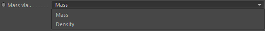

Tag
Mass via..

Define how the mass should be derived for this Rigid-Body.
1. Mass - Currently the best way to do so
2. Density - Requires this tag to sit on a mesh volume. Works kind of but you are better off using Mass mode.
Mass [kg]
The mass of the object in SI-Units.
Density [kg/m³]
The density of the object in SI-Units which allows to dervice mass from (if this tag sits on a volume).
Center of Gravity
Drop any object in here that has a position and that one will be the new Center of Gravity of the rigid-body.
Tag::Simulation
Translational deactivation at..
If rigid-bodies move only slightly over a certain period of time the Bullet dynamics can put them to rest. This defines the time in seconds before this happens. Usually you don't change this.
Rotational deactivation at..
If rigid-bodies rotate only slightly over a certain period of time the Bullet dynamics can put them to rest. This defines the maximum rotation angle before this happens. Usually you don't change this.